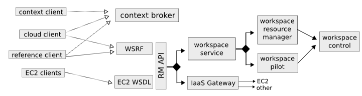

-
What is Nimbus? _NAMELINK(nimbus)
Nimbus is a set of open source tools that together provide an "Infrastructure-as-a-Service" (IaaS) cloud computing solution. Our mission is to evolve the infrastructure with emphasis on the needs of science, but many non-scientific use cases are supported as well.
Nimbus allows a client to lease remote resources by deploying virtual machines (VMs) on those resources and configuring them to represent an environment desired by the user.
It was formerly known as the "Virtual Workspace Service" (VWS) but the "workspace service" is technically just one the components in the software collection.
-
What is the main way to deploy Nimbus? _NAMELINK(cloudkit)
Options aren't always a good thing, especially to start with. The main way to deploy Nimbus is the "cloudkit" configuration. This involves hosting a site manager service and creating an image repository for clients to have their own personal image directories (see the cloud guide for details). You direct your new users to use the cloud client which gets them up and running in just a few minutes if the credential situation is understood.
Overview of the cloud configuration:

-
Is Nimbus hard to install? _NAMELINK(install)
Nimbus itself is not hard to install, it has a script driven install option that asks you questions (see the administrator guide for details).
Nimbus requires that some dependencies are installed first. On the service node: Java (1.5+) and bash. On the hypervisor nodes: Python (2.3+), bash, ebtables, DHCPd, and Xen (2 works but 3 is recommended).
All of these things are installable via the package management system of all the popular Linux distributions.
-
What are the main Nimbus components? _NAMELINK(nimbus-main-components)
-
The Workspace Service site manager
-
A WSRF based remote protocol implementation
-
The RM API bridge between remote protocols/security and specific site manager implementations.
-
The cloud client aims to get users up and running in minutes with instance launches and one-click clusters.
-
The reference client exposes the entire feature set in the WSRF protocol as a commandline client (with underlying Java client library). For advanced uses, scripting, portal integration, etc.
-
The Workspace Pilot allows you to integrate VMs with resources already configured to manage jobs (i.e., already using a batch scheduler like PBS).
-
The workspace-control agent implements VMM and network specific tasks on each hypervisor.
-
The Context Broker allows clients to coordinate large virtual cluster launches automatically and repeatably.
-
The Context Agent lives on VMs and interacts with the Context Broker at VM boot.
-
The EC2 backend allows the service to turn around and secure remote resources from off-site.
The components are lightweight and self-contained so that they can be selected and composed in a variety of ways. For example, using the workspace service with the pilot will enable a different cluster integration strategy. You can mix and match protocol implementations with the "pure Java" resource management module.
Writing new components should be a matter of "dropping" them in. For example, this summer saw a workspace-control replacement that adds support for KVM virtual machines (this is a Google Summer of Code project whose result will be integrated into Nimbus officially in the fall). As explained in "What is the RM API?", the Java side of things is LEGO® like. And we are working towards modularizing even more and providing better implementations for various components. Any questions, suggestions, and requirements in this area are appreciated.
-
-
What is the Workspace Service? _NAMELINK(workspace-service)
The Workspace service is a standalone site VM manager that different remote protocol frontends can invoke.
The current supported protocols (WSRF and EC2) happen to both be Web Services based and happen to both run in the Apache Axis based GT Java container. But neither thing is a necessity:
-
There is nothing specific to web services based remote protocols in the workspace service implementation, the messaging system just needs to be able to speak to Java based libraries.
-
Workspace service dependencies have nothing to do with what container it is running in, they are normal Java application dependencies like Spring, ehcache, backport-util-concurrent, and JDBC (currently using the embedded Derby database).
-
-
What is the WSRF frontend? _NAMELINK(wsrf-frontend)
This is the protocol implementation in longstanding use by previous workspace services and clients including the popular cloud-client. A full protocol guide enumerating differences is forthcoming.
-
What is the EC2 frontend?
This is an implementation of the Amazon Elastic Compute Cloud (EC2) web services description (WSDL) that allows you to use clients developed for the real EC2 system against Nimbus based clouds.
There is support for both EC2 interfaces: SOAP and Query. The Query API support is present in the forthcoming 2.3 release.
-
What EC2 operations are supported? _NAMELINK(ec2-messaging)
(See What is the EC2 frontend?)
Nimbus provides a partial protocol implementation of EC2's WSDL (namespace http://ec2.amazonaws.com/doc/2008-05-05/, a previous version supported 2008-02-01). The operations behind these EC2 commandline clients are currently provided:
-
ec2-describe-images - See what images in your personal cloud directory you can run.
-
ec2-run-instances - Run images that are in your personal cloud directory.
-
ec2-describe-instances - Report on currently running instances.
-
ec2-terminate-instances - Destroy currently running instances.
-
ec2-reboot-instances - Reboot currently running instances.
-
ec2-add-keypair [*] - Add personal SSH public key that can be installed for root SSH logins
-
ec2-delete-keypair - Delete keypair mapping.
[*] - There are two options for add-keypair implementations that can be chosen by the administrator in the conf file:
-
One is the normal implementation where the server-side generates a private and public key (using jsch) and delivers the private key to you.
-
The other (configured by default) is a break from the regular semantics. It allows the keypair "name" you send in the request to be the name AND the public key value. This means there is never a private key server-side and also that you can use keys you aready have created on your system. (In a sense, this is add-keypair as opposed to the normal behavior which should perhaps be named create-keypair).
-
-
What is the cloud client? _NAMELINK(cloud-client)
The cloud client aims to get users up and running in minutes with instance launches and one-click clusters, even from laptops, NATs, etc. See the cloud client quickstart and cluster quickstart to see what it can do.
-
What is the reference client? _NAMELINK(reference-client)
The reference client exposes all features of the WSRF frontend as a commandline client. It is relatively complex to use and thus typically wrapped by task-specific scripts.
Internally, it's implemented around a base Java client API suitable for portal integration or any programmatic usage. Docs on this API are forthcoming but if you are interested check out org.globus.workspace.client_core in the client source tree (contains Javadoc comments and also consult example usages in the org.globus.workspace.client.modes package).
-
What is the Workspace Pilot? _NAMELINK(wpilot)
The pilot is a program the service will submit to a local site resource manager (LRM) in order to obtain time on the VMM nodes. When not allocated to the workspace service, these nodes will be used for jobs as normal (the jobs run in normal system accounts in Xen domain 0 with no guest VMs running).
Several extra safeguards have been added to make sure the node is returned from VM hosting mode at the proper time, including support for:
- the workspace service being down or malfunctioning
- LRM preemption (including deliberate LRM job cancellation)
- node reboot/shutdown
Also included is a one-command "kill 9" facility for administrators as a "worst case scenario" contingency.
Using the pilot is optional. By default the service does not operate with it, the service instead directly manages the nodes it is configured to manage.
-
What is the RM API? _NAMELINK(rm-api)
Most things having to do with the Java server side components are very flexible, featuring an extensibility system that allows for customization and replacement at runtime of various behaviors. By employing the Spring framework's "Dependency Injection" system, the Java components are virtually like LEGO® blocks.
One of the very strong internal interfaces here is the site resource management module which allows the remote security and protocol implementations and semantics to be separate from one consistent set of management operations. The implementing module governs how and when callers get VMs, it assigns resources to use, and takes them away at the appropriate times, etc.
You can see the API javadocs online here (version _WORKSP_CURRENT_VM_VERSION)
-
What is workspace-control? _NAMELINK(wcontrol)
Program installed on each VMM node used to (1) to start, stop and pause VMs, (2) implement VM image reconstruction and management, (3) securely connect the VMs to the network, and (4) to deliver contextualization information (see Context Broker).
Currently, the workspace control tools work with Xen and KVM but only the Xen version is distributed. A Google Summer of Code student added KVM support which should be fully integrated this fall.
Implemented in Python in order to be portable and easy to install. Requires sudo, ebtables, and a DHCP server library.
-
What is the Context Broker? _NAMELINK(ctxbroker)
This is a service that allows clients to coordinate large virtual cluster launches automatically and repeatably.
Used to deploy "one-click" virtual clusters that function right after launch as opposed to launching a set of "unconnected" virtual machines like most VM-on-demand services give you. It also provides a facility to "personalize" VMs (seed them with secrets, access policies, and just-in-time configurations). This requires that the VMs run a lightweight script at boot time called the Context Agent.
This is a user-oriented system that runs as an "overlay" on top of the normal VM-on-demand mechanics. It's been used on top of Nimbus clouds as well as with EC2 resources via the EC2 backend.
See the one-click clusters guide for more detail and the one-click cluster example to show just one of the many things this can be used to accomplish.
-
What is the Context Agent? _NAMELINK(ctxagent)
A lightweight agent on each VM -- its only dependencies are Python and the ubiquitous curl program -- securely contacts the context broker using a secret key. This key was created on the fly and seeded inside the instance. This agent gets information concerning the cluster from the context broker and then causes last minute changes inside the image to adapt to the environment.
See What is the Context Broker? Download it from this one-click clusters guide section.
-
What is the EC2 backend? _NAMELINK(ec2-backend)
This is a workspace service backend that serves as a portal to the Amazon Elastic Compute Cloud (EC2).
It allows clients to boot virtual machines in the Amazon cloud using grid protocols and their X509 credentials, first passing through the service's authorization and accounting layers.
The EC2 gateway provides:
- The ability to run any public Amazon Machine Image (AMI) image on Amazon as well as whatever AMIs the workspace service's credentials have access to privately.
- Asynchronous WSN notifications about status (EC2 does not, it relies on polling)
- Adjustment of the root account's SSH pubkey authorized_keys ("personalization") on the VM
- Running time enforcement
- It makes the public IP address of the VM known to you via resource property when the address becomes available (on EC2 this is known only after it begins to run).
- Detailed accounting that the authorization layer can use to make decisions based on a client's current aggregate and reserved usage.
This code is not in a current release, but it is currently deployed.
EC2 currently provides five allocation types.
-
What is the "cloudkit"? _NAMELINK(defcloudkit)
-
What is the AutoContainer? _NAMELINK(autocontainer)
Currently Nimbus is deployed into a Globus 4.0.x Java container which is a system built around the Apache Axis engine.
To get you started with this system very quickly, we provide something called the AutoContainer which is a complete Globus Java web services core environment. It comes with a setup program that configures everything you need to get a secure web services container running from scratch in about a minute.
Instructions are in this section of the administrator guide.
-
How does Nimbus compare to OpenNebula? _NAMELINK(opennebula)
OpenNebula is, like Nimbus, an open source framework that deploys and manages virtual machines on physical resources. The main difference is that while Nimbus exposes remote interfaces (based on EC2 or WSRF) and handles the related security issues, OpenNebula does not. Nimbus interfaces can be combined with OpenNebula virtual machine manager on the backend. In fact, such experimental integration has already been carried out, see here.
-
How is the software licensed? _NAMELINK(license)
Nimbus is licensed under the terms of the Apache License version 2.